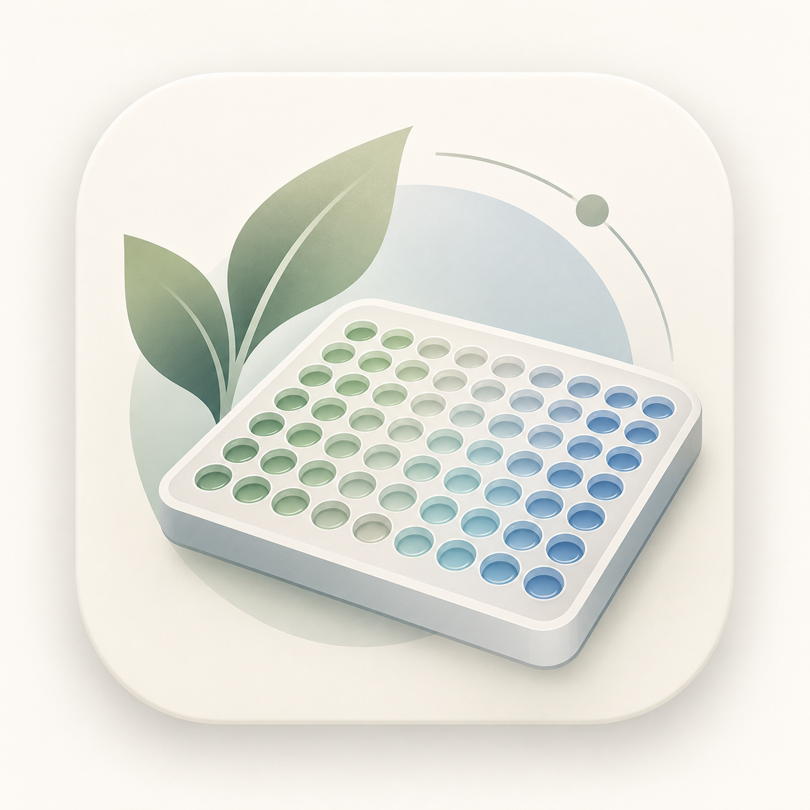

blackblues
.
仅保存在此浏览器

Plate Layout Designer
孔板铺板设计器
从实验分组，到一张清晰的铺板方案。
实验名称 / 方案标题
0 / 160
↶
撤销
↷
重做
⟲
重置
↓
导出 PNG
↓
导出 JPG
96 孔板
96-well plate
0 / 96 已标记
点击 / 拖动多选
·
方向键移动，空格选中
8 行 × 12 列
标签图例
Legend & statistics
尚未标记孔位
确认导入原始方案
下载当前方案备份
下载待导入原文
下载规范化预览
确认导入规范化方案
取消
请启用 JavaScript 以使用孔板设计和图片导出功能。